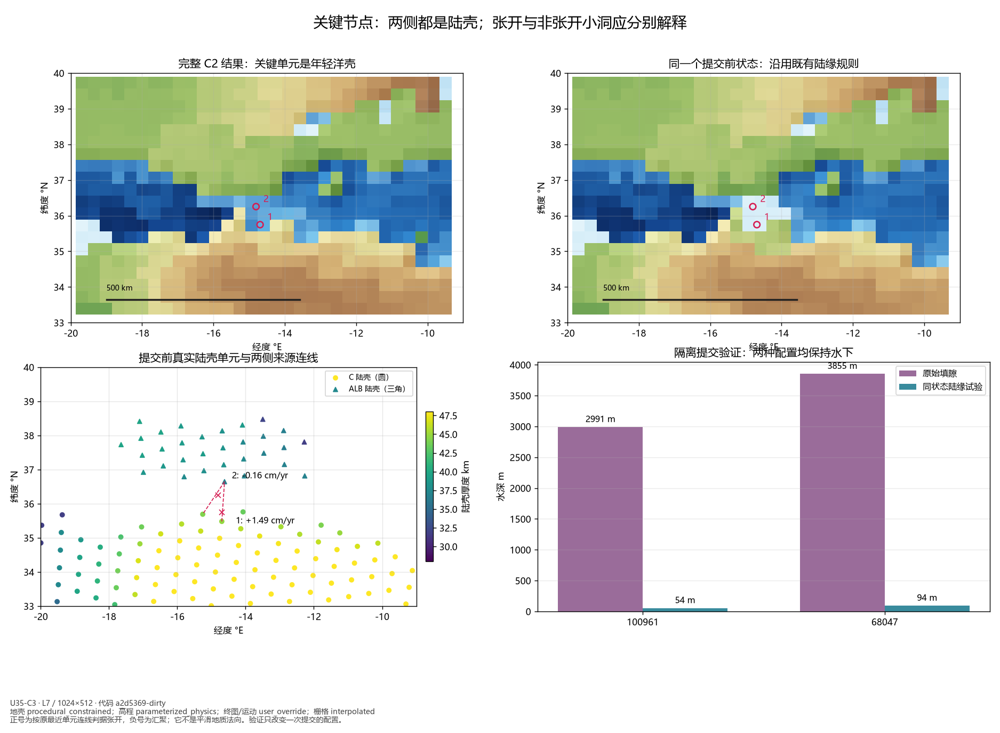
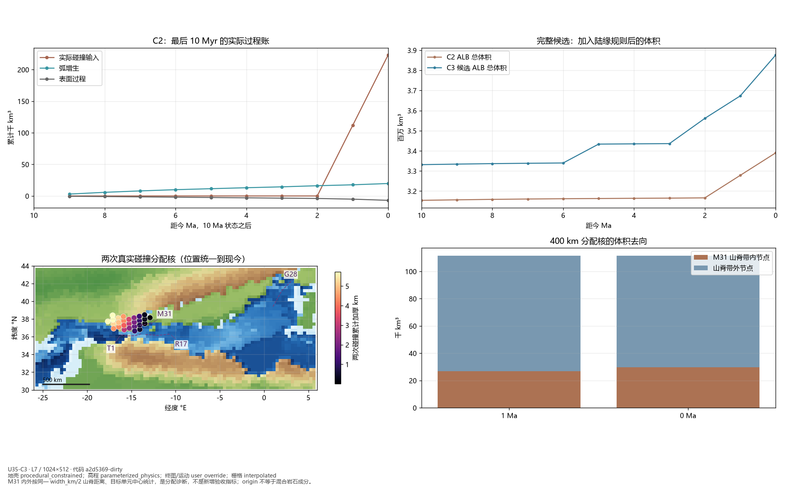
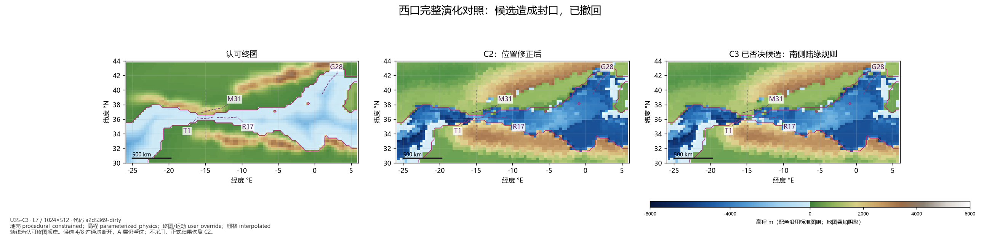
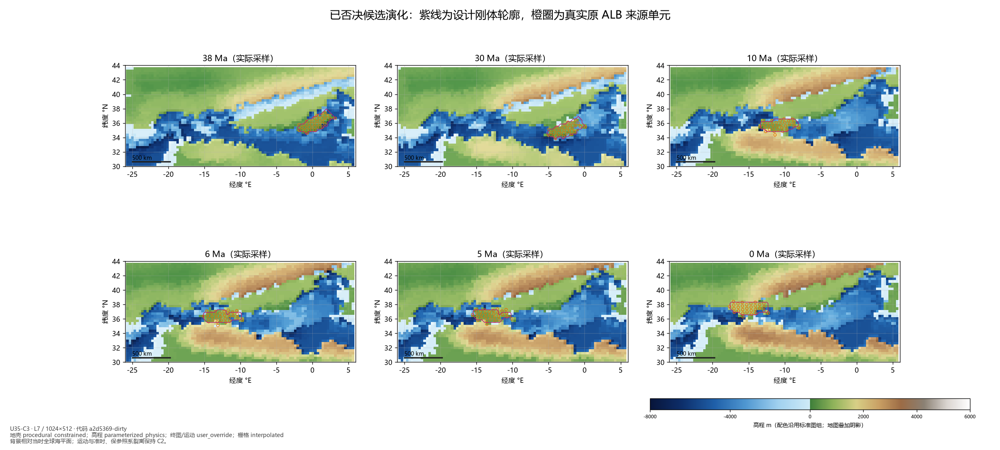
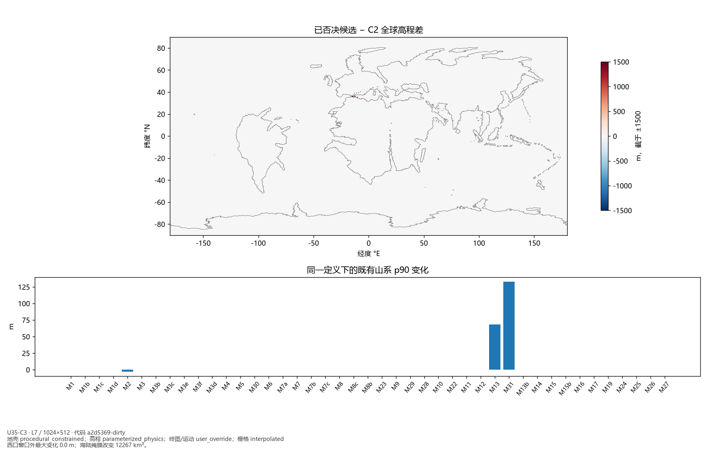
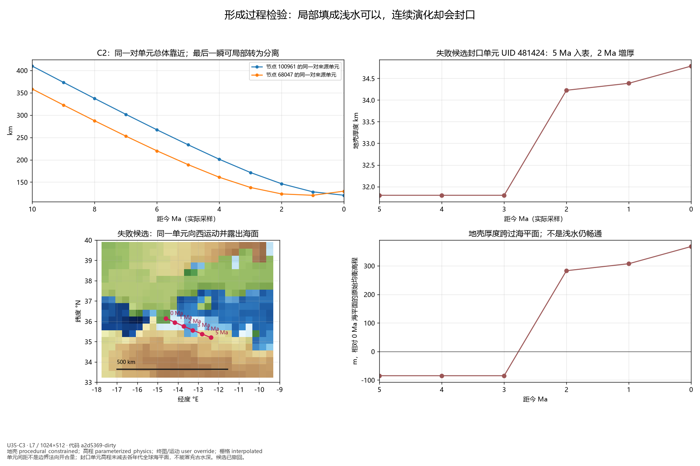

U35-C3：南侧陆缘填隙与山弧过程账
候选导致西口封闭，已撤回；正式物理结果保持 C2。本检查点提交诊断与失败证据，未宣布 U35 收尾或阶段通过。
C2 对照 · 正式结果标准图组与指标 · 已否决候选标准图组与指标
26_west_arc_c3_gap_evidence.png

27_west_arc_c3_volume_allocation.png

28_west_arc_c3_comparison.png

29_west_arc_c3_evolution.png

30_west_arc_c3_global_change.png

31_west_arc_c3_failed_candidate_history.png
